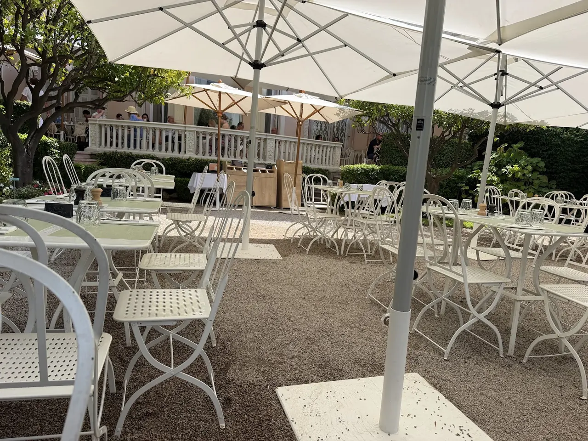

식당·카페 P0
Une table pour deux, s'il vous plaît.
두 명 자리 부탁합니다.
윈 타블 푸르 되 실 부 플레

생장캅페라 반도의 절경 위에 우뚝 솟은 에프뤼시 드 로스차일드 빌라(Villa Ephrussi de Rothschild) 내부에 위치한 레스토랑 & 살롱 드 테 베아트리스는 코트다쥐르에서 가장 전망이 아름다운 식사 장소 중 하나다.
베아트리스 남작부인의 옛 다이닝 룸을 개조한 클래식한 실내 살롱 또는 지중해 빌프랑슈 만(Rade de Villefranche)이 파노라마로 펼쳐지는 야외 테라스에 앉아 여유로운 점심과 티 타임을 만끽할 수 있다.
빌라 관람과 분수 정원 산책 사이에 즐기는 신선한 샐러드, 생선 요리, 그리고 프로방스 디저트는 단순한 식사를 넘어 벨 에포크 시대 귀족의 일상을 체험하는 특별한 순간을 선사한다.
여행자가 직접 희망한 빌라 런치 장소(WISH-02)로, 빌라 입장권 소지자만 이용할 수 있는 독점적 공간이다. 점심 식사(12:00~15:00)와 9개 테마 정원 산책을 하나의 완결된 데스티네이션 블록으로 구성하여 Day 11(화요일) 빌프랑슈 및 생장캅페라 빌라 관람 연계 점심으로 방문하면 깊이 있는 여정을 완성할 수 있다.
| 운영시간 | 레스토랑 11:00–17:30 · 점심 12:00–15:00 |
|---|---|
| 휴무 | 연중무휴 (빌라 운영일과 동일) |
| 가격대 | €24-€48 |
| 예약 | 점심 테라스석 예약 권장 (빌라 입장객 전용, 입장료 €18 별도) |
| 소요시간 | 60–80분 재확인 |
| 항목 | 상세 정보 |
|---|---|
| 위치 | 1 Avenue Ephrussi de Rothschild, 06230 Saint-Jean-Cap-Ferrat, France |
| 좌표 | 43.6865, 7.3323 |
| 운영 시간 | 레스토랑 11:00–17:30 · 점심 서비스 12:00–15:00 |
| 정기 휴무 | 연중무휴 (빌라 운영일과 동일) |
| 가격대 | 단품 요리 €24~€38 · 점심 코스/플레이트 약 €38~€48 · 디저트/티 세트 €16~€22 |
| 이용 조건 | 빌라 에프뤼시 드 로스차일드 입장객 전용 (빌라 입장료 €18 별도) |
| 예약 | 점심 피크 시간대(12:30~13:30) 테라스석 예약 권장 |
| 접근 교통 | 니스 시내에서 15번 버스 탑승 후 Passable / Villa Ephrussi 정류장 하차 도보 5분 |
| 공식 정보 | 공식 웹사이트 (verified_at: 2026-08-21) |
로스차일드 가문의 상징적인 분홍빛 팔라초 1층에 자리하여, 18세기 프랑스 가구와 장식 예술품으로 둘러싸인 우아한 실내 분위기를 유지하고 있다.
Une table pour deux, s'il vous plaît.
두 명 자리 부탁합니다.
윈 타블 푸르 되 실 부 플레
Une carafe d'eau, s'il vous plaît.
수돗물 한 병 부탁합니다.
윈 카라프 도 실 부 플레
L'addition, s'il vous plaît.
계산서 부탁합니다.
라디시옹 실 부 플레

국제영화제의 상징 크루아제트 대로와 호화 요트 항구, 그리고 11세기 중세 어촌의 원형 르 쉬케 언덕이 공존하는 코트다쥐르의 영화 도시.

해발 92m 바위 절벽 위에서 천사의 만(Baie des Anges)과 구시가지, 림피아 항구를 360도 파노라마로 굽어보는 니스 최고의 천연 전망 공원.

지중해 꽃과 프로방스 제철 식재료, 그리고 갓 구워낸 니스 전통 소카(Socca)를 맛보는 유서 깊은 야외 시장 광장.

지중해로 60m 솟아오른 천연 바위 절벽 위에 조성된 모나코 대공국의 역사적 심장부이자 왕궁 마을.

크루아제트의 화려함 뒤에 숨겨진 11세기 옛 어촌의 가파른 돌계단 골목과 정상 성당에서 바라보는 칸 만의 파노라마.

칸 주민들의 부엌이자 지중해 해산물, 프로방스 과일, 꽃, 치즈가 가득한 1934년 유서 깊은 철골 재래시장.